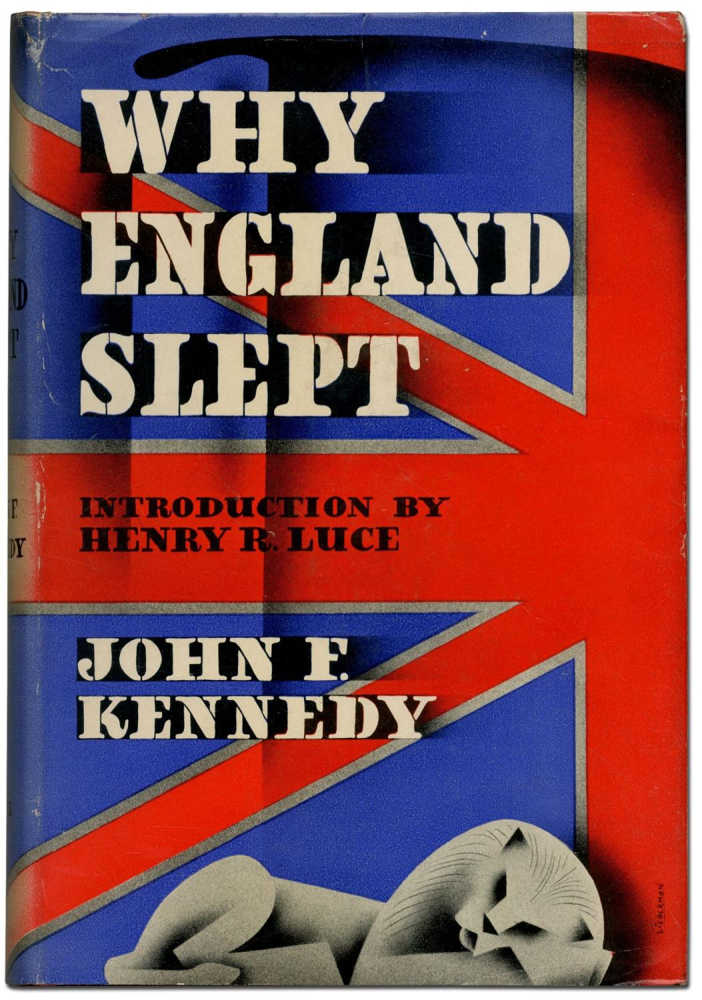

Kennedy was born in May 29, 1917 in Brookline, Massachusetts to wealthy Irish Catholics parents. His father was was Joseph Kennedy Sr a successful banker and his mother Rose Elizabeth Taylor who was the daughter of the mayor of boston. He grew up in a large family with 8 siblings in total.His older brother is Joseph Jr. and his younger siblings are Rosemary, Kathleen, Eunice, Patricia, Robert, Jean and Edward
John was a sick child often and was diagnosed with Addison's disease and because of this he would often spent a lot of his early life living in a hospital. He was always described by a happy loving child despite this shortcomings. Joseph Sr and Rose expected great things in their children and they wanted Joseph Jr to be President of the United States Joseph Jr. and John did not go to the Uk with their family but rather attended a Private High School called Choate Rosemary Hall in the state of Connecticut. He was not as popular as his older brother. He was bullied for being Irish and would be called derogatory names and he would embrace this by making a group called “The Muckers” During a football game he injured his back having to get surgeries never to fully recover from it. John graduated and went to Harvard in 1936 and joined the swim and sailing teams. Was known as a womanizer throughout campus. He wanted to study English but his father pushed him towards political sciences and law. Both him and his brother worked in the American embassy in London thanks to their father. He developed an interest in political philosophy and wrote a book called “Why England Slept” which talked about why England was not prepared to go to war with Nazi germany.
He wrote his book as his senior thesis and it established his name as a political expert After he graduated his father was forced to step down as the Ambassador after he said the he can negotiate a peace treaty with Hilter. John and Joseph Jr wanted to join the Navy as the US entered WWII in 1941 John was rejected because of his back injury but his father paid off the army officials to let him pass. John worked as the commander of a torpedo ship in the South Pacific called PT-109. He was constantly suffering from his back pain in this time but that did not stop him. His ship was attacked by the Japanese and he swam for hours looking for the survivors and swimming to safety. He was awarded the Navy and Marine Corps Medal for his service despite his injuries. His family celebrated their hero which made his older brother feel a great sense of shame for not doing the same during the war. He accepted a dangerous mission that would be his last and on August 12, 1944 he died in an from an explosion. Joseph Sr. hopes and dreams of having his son as the president was passed down to John John F. Kennedy never wanted to the President but he had no choice since he wanted to, however he did not want to let down the dreams of his father and brother.
He always wanted to be a writer but decided on changing to politics with the help of his father money and connections after his older brother`s passing. His younger siblings would work on his campaign as their full time job. He spent much of his late 20s and early 30s to move up to the House and the Senate. He married jacqueline in 1953 In the 1960s he was democratic nominee for the President and he was running against Richard Nixon. 90% of Americans so this was the first televised elections. Kennedy looked young and energetic while Nixon looked pale and sick. He was a media success but the radio listeners did not see it that way. The public loved Kennedy and it was noted by his wife Jacqueline that he would often come home sobbing whenever he heard the tragic news of an American dying. He named his younger Brother Bobby as the Attorney General John with his declaration sent men to the moon! He stopped the conflict of the bay of pig which almost caused nuclear war. He stressed letting one day bleed to the next. By 1962 the threat of nuclear war subsided.
Their family was known as the American Royalty and often described as Camelot this was a stark contrast to Eisenhower's presidency. John loved his wife but she was still a womanizer He has a lot of secretive affairs and especially with Marilyn Monroe who would often call the White house Jackie wanted a divorce but stayed for his career The Soviets build a wall around West Berlin. Since he experienced war and lost his brother to it because of this he did not want to take his country to war. Because of his stance he was considered soft on communism which was not a good characteristic to have at this. Makes the peace corp to spread American ideals across the global. The leading political issue during his presidency was civil rights. Democrats at this time were split and southern democrats constrained Kennedy from doing much besides shallow support. After Martin Luther King Jr.`s “I had a dream” speech he finally sent a civil rights bill to congress It was not passed until 1964. On november 22nd 1963 John and Jacqueline kennedy went to Texas to smooth things over within the democratic parties. They joined the governor and his wife in the presidential motorcade through the streets of dallas where John was shot and pronounced dead on the spot. President Lyndon B Johnson assumed the role of the President.
May 29, 1917 - November 22, 1963